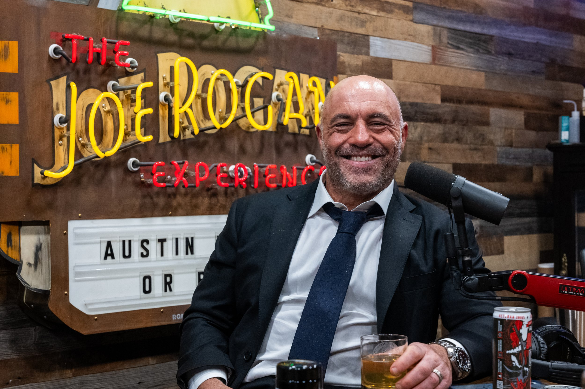

Joe rogan
Persongalleri

Joseph James "Joe" Rogan, född 11 augusti 1967 i Newark, New Jersey,
är en amerikansk poddradiovärd, kampsportkommentator (UFC), ståuppkomiker,
skådespelare och tidigare tv-programledare.
Han är uppväxt i Boston men sedan 2020 bosatt i Austin, Texas.
Joe Rogan är även expertkommentator för den
amerikanska MMA-organisationen Ultimate Fighting Championship (UFC) sedan 1997.
Han är en av de mest kända cannabisförespråkarna[3] i USA och medverkar i den
cannabisvänliga dokumentärfilmen The Union från 2007.
De svenska TV-tittarna känner kanske igen honom mest som tidigare programledare
för amerikanska Fear Factor, som sänts i TV3 och TV6.
Rogan har också haft en roll i TV-serien NewsRadio